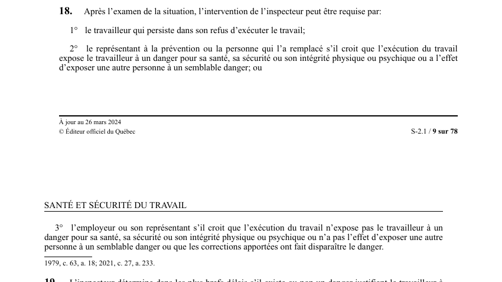

art-18-LSST : demande d'intervention de l'inspecteur
Un article du wiki ⚖️ Recueil législatif
En bref
Après l'examen de la situation, l'intervention de l'inspecteur peut être requise par le travailleur persistant dans son refus. Il s'agit d'une obligation.
- Ou par l'employeur s'il croit qu'il n'y a pas de danger.
🌐 LegisQuébec · 📄 PDF officiel (page 9)
Texte officiel : capture du PDF
{kind=link}

Toucher l'image pour l'agrandir🔗 Ouvrir a cette page : LSST.pdf : page 9 · texte a jour au 26 mars 2024
Voir aussi
- art. 16 : convocation représentant prévention · dès qu'il est avisé, le supérieur immédiat ou l'employeur convoque le représentant à la prévention pour examiner la situation ; en son absence, il est remplacé par un représentant de l'association accréditée disponible ou, à défaut.
- art. 17 : persistance du refus, remplacement autorisé · faculté : si le travailleur persiste dans son refus et que l'employeur et le représentant à la prévention estiment qu'il n'existe pas de danger ou que le refus repose sur des motifs personnels acceptables.
- art. 19 : décision inspecteur sur refus · obligation : l'inspecteur détermine dans les plus brefs délais s'il existe un danger, peut ordonner la reprise du travail, prescrire des mesures temporaires, et exiger des corrections dans les délais fixés ; sa décision doit être motivée, confirmée par écrit et transmise au travailleur.
- art. 20 : révision décision inspecteur · faculté : la décision de l'inspecteur peut faire l'objet d'une demande de révision et d'une contestation devant le Tribunal administratif du travail (TAT) conformément aux articles 191.1 à 193 ; la décision a effet immédiat malgré une demande de révision.
- ↑ Loi : LSST
Pages qui pointent ici (3)
- art-16-LSST : convocation représentant prévention Recueil législatif
- art-19-LSST : décision inspecteur sur refus Recueil législatif
- art-20-LSST : révision décision inspecteur Recueil législatif